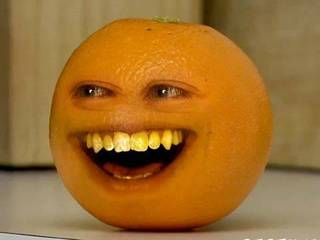

|
 Ovocné stromy už sú na sklade! Práve sme dostali ve¾kú dodávku broskýò, hrušiek, jabloní a sliviek so silným koreòovým systémom a zdravým olistením, v cene len za 3,50€. Pre viac informácii navštívte stránku HTML index. Nové èlánky! Preèítajte si najnovšie èlánky: Èo to znamená? Narazili ste na nejaký neznámy záhradnícky pojem? Vyh¾adajte si ho v našej web stránke |